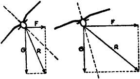
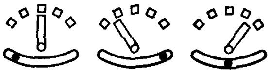

Manual del Vuelo a Vela
Wolf Hirth
1942
Vuelo sin visibilidad
por
WOLFGANG SPÄTE
Vuelo
sin visibilidad se
llama al vuelo en nubes o niebla sin ver el terreno ; en este vuelo el piloto está, en
cierto modo, como si fuese « ciego », pues no ve el horizonte y pierde por completo la
sensación de espacio (Por
esta razón se llama también este vuelo «
vuelo ciego
» o «
a ciegas »;
la traducción directa del vocablo alemán es la primera citada. Sin embargo, para una
obra técnica parecen esas denominaciones poco correctas y aunque son empleadas en el
lenguaje familiar entre los aviadores, siempre, en escritos y obras, se usa la aquí
adoptada, de vuelo sin visibilidad, aunque alguna vez usaremos las otras denominaciones
para evitar repeticiones y cacofonías. - N. del T.).
En un piloto de velero el vuelo sin visibilidad es condición fundamental para el vuelo de
altura y, aunque no indispensable, es también necesaria, a veces, en el vuelo de
distancia. En días de cielo despejado pueden, naturalmente, encontrarse ascendencias pero
rara vez se llega con ellas a más de los 2000 m. Ciertamente que también se encuentran
ascendencias en algunos jirones de nubes que pueden aprovecharse sin necesidad del vuelo
sin visibilidad, pero en los grandes cúmulos, de centenares y hasta de miles de metros
de espesor, es donde existen las ascendencias intensas y donde se ofrece la posibilidad de
subir mucho y de prisa, pues las nubes, al dejar libre el calor de condensación,
refuerzan la velocidad ascensional del aire y hasta atraviesan las inversiones que puedan
existir.
Hay
algunos pilotos de velero muy conocidos que han renunciado al vuelo sin visibilidad casi
completamente, achacando su renuncia a las condiciones de su aparato. Pero esta
consideración hoy es infundada, pues en estos tiempos apenas se construye un velero que
se pueda llamar de concurso que no tenga la resistencia mecánica suficiente para el vuelo
a ciegas y que no vaya provisto de frenos para casos de « resbalamiento ». A pesar de
esto, no es improbable que un aparato construido para el vuelo acrobático con sujeción a
las reglas de cálculo apropiadas, sea desmontado en una nube si a una violenta
recuperación del vuelo en picado se une una zona extraordinariamente turbulenta que le
someta a esfuerzos excepcionales. Pero entonces el suceso hay que imputárselo al piloto y
no al aparato. Por otro lado, existe la razón de no entrar en una nube con vuelo sin
visibilidad para no correr el peligro de una colisión con otro aparato. Este argumento
podría admitirse a primera vista si se piensa en que, en un concurso, ocurre muchas veces
que media docena de veleros entran en una nube y allí se ponen a virar. Además, sé
por propia experiencia que, de cuando en cuando, aviones de motor atraviesan también los
cúmulos fuera de las zonas reservadas para prácticas de vuelo sin visibilidad.
Pero
cuando se considera más de cerca la cuestión, todo este peligro se desvanece si se tiene
en cuenta que en los concursos sólo salen dispuestos al vuelo sin visibilidad los
pilotos experimentados, los cuales abandonan la nube tan pronto como han perdido el
contacto con la ascendencia. A pesar de esto, a mi mismo me ha ocurrido más de una vez
ver salir de una nube un aparato cayendo en barrena. Sin embargo, no tengo conocimiento de
que en ocasiones de las señaladas haya ocurrido una colisión; pero el peligro existe y
será prudente no entrar a virar en una nube en la que poco antes se haya visto
desaparecer otro avión. A pesar de todo, el piloto debe tomar en consideración ese
peligro para en vista de él ganar altura lo más rápida y fácilmente posible, que es lo
que nunca podría hacer sin el vuelo a ciegas con el que, además, tiene ocasión de vivir
uno de los aspectos más bello y seductor del vuelo a vela. Desde luego, en el vuelo sin
visibilidad se siente el piloto dueño, como nunca, de los elementos, que domina con un
aparato tan ligera y graciosamente construido. Nunca querría un piloto de velero verse
privado del placer de aquellos minutos y segundos de sus vuelos, en los que atravesó el
gris lechoso de la nube para subir hasta el cielo azul.
¿ Cómo
volaré a ciegas?
1.º Instrumentos para el vuelo sin visibilidad
Un
velero equipado para el vuelo a ciegas debe llevar los siguientes instrumentos (véase
capítulo Instrumentos de velero, Pág. 187 y 55. y Fig. 74):
1.º
Indicador de velocidad.
2.º
Variómetro.
3.º
Altímetro.
4.º
Brújula.
5.º
Indicador
de virada.
6.º
Inclinómetro
longitudinal.
Sin
indicador de virada el vuelo a ciegas es una cosa imposible absolutamente de realizar
para un hombre normal. Nos falta a los
humanos
el « sexto sentido », el sentido para apreciar la posición real en el espacio. Quien
haya hecho un lupin, sea como pasajero en avión de motor, sea como piloto llevando
la palanca de mando, sabe que si esta acrobacia se hace correctamente, nunca se puede
tener la sensación de salirse del asiento, pues la fuerza centrífuga suple y supera a
la gravedad. Si un aparato, volando el piloto sin visibilidad, entra involuntariamente
en virada aún muy ceñida, con la posición correcta que corresponde, el piloto no se
apercibe de ello porque la fuerza centrífuga que se desarrolla en el giro da lugar a la
presión sobre el asiento como si fuese la gravedad. Solamente sus instrumentos, que no se
dejan sobornar, le informan con imparcialidad sobre la posición de su aparato; esos
instrumentos son el indicador de virada y el inclinómetro longitudinal.
Los
aviones de motor que se equipan para vuelo sin visibilidad van provistos también de otro
instrumento giroscópico, el « horizonte artificial », el cual indica las
modificaciones de la posición longitudinal y de la transversal por el principio del
giróscopo. Para el vuelo a vela, opino que basta el empleo del inclinómetro de líquido,
que se describe después, el cual tiene la ventaja de su baratura.

Fig. 142G = Peso.
F = Fuerza centrífuga.
R = Resultante de ambas fuerzas
Izquierda: El avión resbala hacia adentro.
Derecha: El avión con derrape centrífugo
El
indicador de virada es un instrumento giroscópico. Una tobera de depresión
colocada al exterior produce una corriente aérea, la cual, obrando sobre una pequeña
turbina de aire, pone en movimiento de rotación un giróscopo. En
Según
esto, el índice del indicador marca las rotaciones del avión alrededor de su eje
vertical, las cuales resultarán de las desviaciones que el avión tenga respecto a la
dirección general de su ruta. Además, el instrumento tiene un « nivel » especial,
formado por un tubo ligeramente curvado, en el que se mueve una esferilla, la cual
La
magnitud de la desviación del índice del indicador depende del número de vueltas del
giróscopo.

Fig. 143.
Izquierda: Avión
escorado a la izquierda en vuelo recto
Centro: El avión derrapa en la virada a la izquierda; escoramiento insuficiente
Derecha: Virada correcta a la derecha
La abertura de
aspiración del indicador va provista de un tornillo para regular la corriente aspirada y
con ella el numero de vueltas del giróscopo. Lo importante es arreglar el indicador de
modo que el índice ocupe la posición extrema de la escala cuando el avión tenga la
posición más inclinada. La sensibilidad, y con ella la magnitud de la desviación del
índice, varía con la velocidad con que la tobera de toma de aire recibe la corriente
aérea, de modo que como cada tipo de velero tiene una velocidad propia distinta
resultará que en cada uno de los casos será también distinta la velocidad del aire que
actúa sobre la tobera. Así pues, no debe rehusarse la molestia de hacer la regulación
del instrumento aunque se emplee en ella bastante tiempo, pues solamente así se puede
tener la seguridad de llevar el aparato sin peligro, aun en vuelo a ciegas, a una
ascendencia aunque sea de reducido diámetro.
Es
también indispensable hacer que la sensibilidad del indicador sea la debida en la zona de
la posición normal, para lo cual en un sitio determinado, generalmente en la parte
superior, hay un tornillo de cabeza ranurada, por cuyo movimiento se puede dar al
instrumento el amortiguamiento conveniente. Esta operación es muy importante para el
vuelo recto dentro de una nube.
Un
instrumento poco usado hasta ahora por los pilotos de velero es el inclinómetro
longitudinal (Fig. 78). Sería muy ventajoso instalar en todos los veleros un
inclinómetro basado en el principio del giróscopo del tipo representado por el
Horizonte Sperry de la casa Askania. Sin embargo,
a un piloto experimentado le bastará con un inclinómetro de líquido, más sencillo, que
ocupa menos sitio y cuesta mucho más barato (Pág. 200).
2.º Técnica del
vuelo sin visibilidad
En la cuestión
del vuelo a ciegas ocurre que su necesidad se presenta de un modo extraordinariamente
rápido, es decir, el paso del vuelo en aire limpio con la completa visibilidad al vuelo
sin ella en una nube cúmulo absolutamente opaca se verifica de manera tan súbita que es
absolutamente indispensable, antes de realizar el primer vuelo efectivo en nube, tener
va una idea clara de cómo se conducen los instrumentos en las diferentes fases del vuelo
a ciegas. Hay que empezar por contar con que no es nada fácil el vuelo en recta usando
sólo el indicador de virada, la brújula y el indicador de presión dinámica. Son
pocos los que de primera intención pueden hacer que la bola del indicador de viraje se
mantenga en el centro de la escala, y que con la sola ayuda del indicador de velocidad y
de la brújula se conserven las mismas, tanto la velocidad como la ruta, y así hay que
practicar mucho, antes de que la cosa encaje del todo.
Lo que
después hay que aprender es a reconocer la posición de vuelo con cualquier desviación
que marque el indicador de virada y esto con la rapidez del rayo, cosa que al principio
produce una gran tensión del espíritu. Esta « transformación de la idea » para
pasar de la indicación del instrumento a la posición del aparato hay que hacerla «
durmiendo ».
Cuando ya
se ha progresado en tal práctica, se puede hacer fácil el vuelo sin visibilidad, si se
atiene uno a las siguientes reglas:
1.º Dejar de
lado completamente el sentimiento.
2.º Mantener
siempre la velocidad propia del aparato.
3.º
Hacer que la
bola esté siempre en el centro del nivel dando el mando transversal necesario y con el
timón de dirección conseguir que la «aguja» del indicador de virada esté en la
posición que uno quiera.
No es necesario
volver a hacer ninguna reflexión sobre el estado de vuelo que pueda tener el aparato,
sino solamente proponerse que por medio de los mandos se produzcan tales o cuales
desviaciones en los instrumentos o se corrijan las que tengan.
El vuelo
sin visibilidad es de gran valor para el piloto, en primer lugar cuando le permite seguir
deliberadamente dentro de la nube la táctica de virar que viene haciendo en una pompa
térmica, con la que venía ascendiendo debajo de la nube. En toda nube del tipo cúmulo
hay zonas en las que existen ascendencias y otras en las que hay descendencias. Si se
vuela siempre en línea recta atravesando la nube sucederá muchas veces que en las
descendencias de los márgenes de la nube se pierde tanta altura como se ganó dentro de
ella, viniendo a estar casi siempre la nube en el centro de la ascendencia.
El piloto
novel deberá pues empezar ya, sin haber entrado en la nube, a usar sus instrumentos de
vuelo a ciegas para virar en la ascendencia. Si por la indicación del variómetro ve que
está en la ascendencia, se pondrá a virar para describir un círculo que, con arreglo a
lo que ya conoce, tenga radio suficiente para aprovechar bien una ascendencia extensa.
Según se ha explicado antes y partiendo de que la velocidad propia sea la normal, se
hará de modo que la desviación del indicador de virada sea de tal valor que el borde
izquierdo del índice se apoye en el borde derecho del trazo central de la escala o al
contrario. Esto corresponde a la posición de vuelo en curva, que no debe sobrepasarse en
el vuelo a ciegas con avión de motor. Con esta inclinación del avión, la brújula marca
todavía sin manifestar los « errores de virada ».
Una
ascendencia estrecha no puede ser utilizada seguramente volando de ese modo, sino que
una parte del círculo descrito irá a parar fuera de aquélla. Entonces se comprobará
exactamente en qué parte del limbo de la brújula está la aguja mientras se vuela en
descendencia y, en correspondencia con lo comprobado, se empezará a hacer la virada
más achatada en la zona en que la brújula marque el rumbo resultante de sumar de 90º
a
180º al de la zona anterior. Así como en el vuelo libre, cuando se ve el terreno para
orientarse, se va trasladando el círculo descrito hasta entrar en el núcleo de la
ascendencia, en el vuelo a ciegas esto hay que hacerlo únicamente a base de las
indicaciones de la brújula.
Pronto se
llegará a tener confianza en sí propio para ejecutar el vuelo a ciegas y entonces se
harán viradas ceñidas como las que se acostumbra hacer cuando se ve el terreno. Pero
ahora la brújula ya ¡ no sirve ! Cuando el indicador de virada marca desviaciones en las
que el índice está mucho tiempo sobre el primer trazo de la escala, a derecha o
izquierda del trazo central, la brújula empieza a bailar, y se deja sentir la
influencia de la inclinación magnética, es decir, de la desviación de la aguja respecto
a la horizontal. A pesar de la constante rotación del avión, la aguja de la brújula
permanece, durante segundos, en la misma posición, para luego acelerarse repentinamente o
tornar una dirección falsa y marcar así un rumbo distinto del verdadero. Si entonces se
sale uno de la ascendencia mientras se vira ceñido, no hay otro remedio que ir variando
la situación de la virada guiado por el sentimiento o instinto de vuelo. Se sigue volando
según la virada iniciada hasta notar que se ha llegado al borde de la ascendencia, se
vuela recto un par de segundos y otra vez se vuelve a virar con el mismo escoramiento.
Sirve de una buena ayuda tener cronometrada, de antemano, la duración de una virada
completa que será generalmente de veinticinco a cuarenta segundos. Así, si se llega a
salir de la ascendencia, se volará un semicírculo a estima, según los segundos que
correspondan, después se vuela dos segundos con el avión horizontal, para continuar en
seguida con la misma virada.
En
relación con lo que se va diciendo, conviene ahora dar un par de consejos para tomar
rumbo al abandonar la nube. Todo lo fácil que es ganar altura en una nube resulta, en
cambio, difícil muchas veces (y esto también les ocurre, de cuando en cuando, a los
pilotos más experimentados) salir de la nube con un rumbo determinado. Primer consejo:
tener el indicador de virada bien a punto en cuanto a amortiguamiento (véase lo dicho
más arriba). Segundo consejo: ponerse a volar recto, en el mismo momento que la brújula
marque con fijeza un rumbo. Tercer consejo: corregir ahora el rumbo, dando una virada
amplia con pequeña desviación del indicador de virada, dejando derrapar un poco el
aparato, y que vaya tomando la posición horizontal, para que la brújula adquiera su
posición normal respecto al horizonte y no empiece otra vez a « enfurecerse ».
Cuando en
el vuelo sin visibilidad se da una virada con el aparato muy escorado, es decir, con el
índice del indicador de virada en el primero o hasta el segundo trazo de la escala, hay
que empezar a usar el aparato nombrado en segundo lugar en la lista de instrumentos para
el vuelo a ciegas, es decir, el inclinómetro longitudinal. Cuanto más escorado se ponga
el aparato al virar, más fácil es que se salga de su posición de equilibrio. Si se
empieza la virada demasiado aprisa o el aparato se va mucho « de cabeza », se nota antes
este efecto en el inclinómetro que en el indicador de velocidad, por el aumento o
disminución de la presión dinámica. Frecuentemente se presenta el peligro de encabritar
demasiado o desbocarse en proporciones demasiado grandes para poderle evitar, si se le
deja hasta hacerse notar por el aumento o disminución de la presión dinámica. Entonces,
a pesar de ser sensible a la aceleración vertical, el inclinómetro de líquido indica el
encabritamiento o el irse de cabeza un avión con mucho menos retraso y siempre mucho
antes del momento en que esas posiciones hayan hecho sensibles el aumento o pérdida de
velocidad.
Si se ha
llegado a salirse de la ascendencia estando dentro de una nube, naturalmente, es mucho
más difícil volver a encontrarla que cuando se vuela con visibilidad, y esto es una
razón fundamental para que se deba virar, dentro de la nube, ciñéndose de igual modo
que se haya volado debajo de ella. Si se quiere hacer viradas de pequeño radio se debe
poder hacerlas volando despacio; el escoramiento debe mantenerse en límites razonables.
Un círculo de treinta segundos, es decir, un círculo que para describirle se necesiten
treinta segundos, si se vuela a 50 km/hora supone un diámetro de 135 m., pero un círculo
de igual duración hecho a 80 km/hora mide va 212 m. de diámetro. Por lo tanto, para el
vuelo en nube se deberá emplear un aparato cuya velocidad de vuelo mínima sea la menor
posible. Opino que los veleros con los que no se pueda descender de los 70 km/hora son de
muy difícil empleo para vuelos sin visibilidad de larga duración.
A pesar
de que se ponga todo el cuidado posible, no se le puede evitar al principiante en el vuelo
a ciegas que tenga que pagar su cuota de aprendizaje, cuando su cacharro resbala
de cola o si pierde en un cierto momento la necesaria concentración de la atención,
después de largo tiempo de permanencia en la nube y entonces, de repente y con gran
asombro, observa que le rodea un silencio completo « como el de una iglesia » y que
todos los índices de los instrumentos, uno tras otro, penden con la desviación máxima y
sin la acción de marcar que ordinariamente tienen, mientras que cae al abismo con
velocidad silbante. Una vez que se ha entrado en barrena, se trata de volver a la
posición normal, con la acción de los mandos, maniobrando con cautela los de dirección
y transversal hasta llevar a la posición debida, primeramente el índice, después la
esferilla del indicador de virada. Si se tiene la certeza de que se vuela en picado recto,
entonces se empieza a recuperar, ¡ poco a poco !
Si no se
lleva inclinómetro, un piloto experimentado seguirá recuperando hasta que el aparato
esté otra vez con encabritamiento y de nuevo en barrena. Aun cuando se recupere despacio,
el inclinómetro de líquido está aún bajo el influjo de la fuerza centrífuga y se
necesita tener práctica para evitar, de un modo perfecto y seguro, el defecto de
encabritar demasiado al recuperar. Si en el tablero de instrumentos se lleva un «Sperry» en estos
casos es cuando más se aprecia su valor.
Si se
vuela en nubes de mucha turbulencia puede suavizarse el movimiento de cabeceo que se
presenta, o sea estabilizar el avión alrededor de su eje transversal, maniobrando los
frenos DFS de vuelo desbocado, si el aparato los tiene, recurso que, aunque sea a costa
de la velocidad ascendente, hay a veces razones más que suficientes para emplearlo.
El vuelo
sin visibilidad exige, al máximo, todo lo imaginable en cualidades de energía de
voluntad, atención, capacidad de concentración y sentimiento del vuelo que pueda tener
un piloto. Quien ha volado diez minutos dentro de una nube, con la observación atenta de
los más importantes instrumentos, transformando de un modo intuitivo y con la velocidad
del relámpago las sensaciones despertadas en su cerebro por las desviaciones de los
índices de los instrumentos en inmediatas acciones de mando, sabe muy bien con qué
alegría se recibe la salida de la nube y se saluda otra vez el horizonte, y puede
atestiguar la inolvidable tensión de espíritu que exige el vuelo a ciegas en
contraposición con volar cuando se ve la tierra a los pies. Pero también puede dar fe de
que nada hay que exceda en belleza a la sensación que se recibe cuando después de
trabajar en la oscura montaña de un cúmulo se llega a dominarle y se sale, por encima de
él, a la luz del sol.
Como
terminación, daremos de paso a los pilotos de vuelo sin visibilidad un par de
indicaciones que me han sido comunicadas por Ludwig Hofmann.
Antes de
decidirse a ejercicios de vuelo sin visibilidad debe dominar el alumno todas las maniobras
precisas en un aparato con cualquier situación de vuelo. Por lo tanto, la primera
condición para el vuelo a ciegas es poseer el distintivo de vuelo de acrobacia en
velero, pues al empezar a practicar el vuelo dentro de una nube el piloto se encontrará
involuntariamente haciendo acrobacia muchas más veces de las que deseara.
He aquí
unos consejos al alumno para casos en que el mal tiempo no deja volar: Dibuja en un papel
las diferentes posiciones posibles del indicador de virada y del inclinómetro; recorta
las figuras y ejercítate en el siguiente juego de cartas. Siéntate en una silla o en una
cuesta y « sigue » este «curso de vuelo en seco». Extiende ante tu vista las distintas
figuras y ponte a dar una virada. Haz en seguida, con pies y manos, los movimientos
necesarios para mandar el aparato de modo que vuelva al vuelo recto. Haz luego los mismos
ejercicios, representándote que se vira a la derecha, o a la izquierda, etc. Barajando
las cartas, la serie de las figuras resultará distinta y distinta también la serie de
temas que se obtienen, de modo que el número de combinaciones es inagotable. Es evidente
que semejante juego dará gran seguridad en acertar, en cada caso, con los movimientos
necesarios y precisos, ahora que, claro es, la finura de mando en relación con el
amortiguamiento de los instrumentos sólo puede aprenderse, naturalmente, en la práctica
del vuelo.
En los
primeros vuelos sin visibilidad y después también al volar en nubes muy turbulentas o en
tormenta, el piloto cae otra vez en la tentación de no creer en los instrumentos y duda
en la decisión que debe tomar, si obedece a las sensaciones o a las indicaciones de
aquellos, y éste es uno de los momentos más peligrosos del vuelo a ciegas. Se vuelve
aquí a insistir en que el piloto en ningún caso debe confiarse a sus sensaciones, sino a
las indicaciones de los instrumentos. Las sensaciones
¡ engañan mucho en el vuelo a ciegas !
Puesto
que en el vuelo sin visibilidad se llega muchas veces a posiciones de vuelo desagradables,
hay que aconsejar de modo especial que es preciso atarse al asiento concienzudamente. Si
durante la ejecución de un vuelo ve el piloto que si quiere seguir adelante tiene que
hacer vuelo a ciegas, es aconsejable asegurarse antes el cinturón v convencerse, con una
mirada al gancho del paracaídas, de su completa seguridad. También debe cuidar que vayan
bien protegidos en el aparato, los mapas, las provisiones, etc., para lo que son muy
prácticos los bolsos con cierre de cremallera en el revestimiento de la cámara del
piloto.
Werner Blech, de Breslau, contaba
también lo siguiente, sacado de los vuelos por él mismo ejecutados:
En un
día caluroso de junio se notaba ya a 200 m. sobre el suelo una intensa ascendencia. La
base de las nubes estaba a 1600 m. Volando lentamente y en grandes círculos, en aire
completamente tranquilo, llegué hasta los 2000 m., habiendo ganado altura a razón de 2
m/seg. De repente se puso el aire extraordinariamente turbulento. La bola del indicador de
virada corría de derecha a izquierda y al contrario, y traté de tranquilizar el avión
con los mandos transversal y de dirección, pero sin éxito. En cuanto pude, puse el
aparato derecho y empuje la palanca para salir rápidamente de la nube pero después de un
corto vuelo en recta cesó la turbulencia, hallándome otra vez en un aire ascendente
tranquilo y empecé, de nuevo, a virar en grandes círculos y muy despacio. El «Sperber» subía con
velocidad de 3 a 4 m/seg. Pensé que debía subir más de prisa y decidí volar en
círculos aún más grandes. Sin embargo, ¡ estaba equivocado ! De repente crujieron las
alas y el parabrisas, al que el hielo golpeaba y hacía opaco. En la cabina entraban
carámbanos por las rendijas, a lo que se añadía un ruido infernal y un bailoteo salvaje
del aparato en el aire y mío en el aparato. No pensé en otra cosa que en salir de la
nube ! Volé un buen trecho alejándome de ella y entonces vi que había estado en una
tormenta.
Después
hice un nuevo intento de entrar en la nube y fui recibido con una descendencia, en el
margen, de 6 a 8 m/s. Pronto llegué a la zona ascendente y subí otra vez a razón de 7
m/s. La desviación del indicador de virada se iba haciendo más y más pequeña; mandé
un mayor escoramiento, pero sin éxito. EI índice del indicador fue al centro y
permaneció fijo; al mismo tiempo el indicador de velocidad bajó a cero. Las toberas de
los dos instrumentos se habían atascado de hielo y nieve. En la palanca de mando notaba
yo una presión como si alguien estuviese empujando hacia abajo el timón de altura, y
cuando quería mandar los alerones sentía una resistencia como si uno de ellos estuviese
fijo, exactamente igual que cuando se mete el « pico » (expresión vulgar entre los
pilotos para referirse a las pruebas de buena construcción) para dejar inmovilizados
los alerones y se prueba si queda huelgo en los mandos. Convencido de lo peligrosa que era
mi situación, salí de la nube y, una vez fuera, abrí la cabina y sacudí la capa de
hielo de unos 10 mm. de grueso que había, iniciando mi vuelta a Breslau. Durante el
regreso, el aparato, a consecuencia del depósito de hielo, descendía al principio con
una velocidad de 3 m/s. La gigantesca tormenta de calor me había llevado a 30 Km. del
punto en que salí, que fue el aeropuerto de Breslau; llegué a
3400 m. sobre el nivel del mar y tuve una temperatura de – 5º,
mientras
en el suelo había 20º a la sombra.
En julio
de 1936 subí en un frente hasta los 3000 m., y la cosa pasó de esta manera. En el cielo
había bellos cúmulos grandes y gruesos a la altura de 1500 m. y me fui hacia ellos y
anduve de un lado a otro volando debajo de las nubes. Entonces, viniendo del Oeste,
llegó, a unos 500 m. bajo mí, un largo rollo de nubes. En seguida piqué hacia él y le
alcancé, pero quedándome algo más bajo que la nube misma. Inmediatamente empezó a
subir el « Sperber
»,
con más tranquilidad que la que nunca había tenido yo en una ascendencia y así
seguí volando, yendo y viniendo ante el frente; miré por debajo de él y vi que llovía
en su zona posterior y aunque débilmente, por ver a través de la cortina de lluvia, se
apreciaba el sol luciendo al otro lado. Consideré muy favorable la ocasión para saber
lo que era un frente. Nosotros, los silesianos, miramos el frente corno algo demasiado
malo para nuestro vuelo sin motor ; si se ha permanecido media hora en una nube, hay que
temer hallarse en Polonia o en Checoslovaquia o al menos estar muy cerca de la frontera, y
esto no es de desear. Vi la posibilidad de poder seguir pronto la orientación detrás del
frente y dejé al aparato entrar en la nube. Hice viradas en amplio círculo y gané
altura de un modo regular en un aire tranquilo. Después de volar diez minutos sin
visibilidad quise ver dónde estaba. Por equivocación - la brújula se había quedado
enganchada al virar - tomé la dirección contraria, es decir, hacia la cola del frente
y entré en un gran chaparrón de agua y granizo, a lo que se añadió perder altura a
razón de 10 m/s. Sin embargo, pronto estuve en la dirección verdadera y llegué delante
del frente, me orienté y traté otra vez de probar suerte. Me había propuesto un vuelo
con objetivo y no pude acompañar mucho tiempo al frente, puesto que mi objetivo estaba
en dirección transversal a la suya. Llegué a una altura de 3100 m., pero para llegar a
mi destino tuve que soportar la descendencia extraordinariamente intensa de la zona
posterior del frente.
Debo
mencionar, además, un fenómeno muy interesante observado por mí durante mi actividad
como piloto meteorológico. En un día de riguroso verano y en un día de invierno
había, entre las siete y las ocho de la mañana, una nubosidad de estratocúmulos de ocho
décimas de cielo y a unos 2000 m. de altura. De esta capa de nubes sobresalían torres en
las que había gran velocidad ascendente, apreciada respecto a la velocidad ascensional
del avión, en 4 a 5 m/s., llegando esas torres hasta los 5500 m. Este caso representa una
posibilidad de con una estratificación lábil, ganar altura por la mañana temprano y
poder hacer un vuelo de distancia partiendo de la ascendencia de una nube.
Con todos
estos vuelos la confianza en mí mismo crecía más y más, así como la confianza en el
aparato. Es, desde luego, indispensable reconocer el aparato después de esos vuelos, y
con frecuencia se ve la necesidad de templar los cables de los mandos. La coronación de
mi trabajo en 1936 fue la marca europea de altura establecida para el concurso del Rhön, con 4480 m.
sobre el nivel del mar y 3530 m. sobre el punto de salida. (Véase Pág. 361.)
Basado en
mi experiencia personal, aconsejo no poner la mano en el vuelo sin visibilidad a todos
aquellos que no hayan tenido ocasión, como pilotos de avión de motor, de volar mucho a
ciegas y que siendo sólo pilotos de velero no tengan gran práctica de vuelo, y sobre
todo, si no han hecho un curso de ese género de vuelo. Volar a ciegas no es cosa para
todo el mundo. Quien no haya profundizado en el estudio teórico de las propiedades de los
instrumentos de vuelo y no conozca las causas de la barrena y de la caída en espiral y
los medios de evitar esos casos, creo que nunca podrá tener éxito en el vuelo a ciegas.
A los otros les
doy los siguientes consejos:
Vuelo a ciegas
sólo con los aviones más estables.
No hacer
ningún ejercicio de vuelo a ciegas por debajo de 1000 m. sobre el terreno. Desde esta
altura siempre se puede volver a hacerse con el aparato, se llega seguramente a tierra con
el paracaídas y es donde menos perturba el tráfico aéreo.
Emplear con
preferencia indicador de velocidad sin tobera de aire y cuya sensibilidad pueda
modificarse durante el vuelo.
Antes de hacer
el vuelo a ciegas propiamente dicho, ejercitarse en volar sólo con instrumentos hasta
conseguir la absoluta seguridad en su empleo.
Ejercitarse en
volar con diversos escoramientos, en viradas alternadas en un sentido y otro y con
tramos rectos intercalados.
Ensayos de
salir de la virada sin ayuda del indicador de viraje, únicamente con la brújula, o al
menos volar sin él en una dirección determinada.
Al principio
entrar sólo en las nubes pequeñas y de poco espesor. Antes de ganar cierta altura en la
nube, salir de la ascendencia y tratar de volver a encontrarla.
Durante el
vuelo en virada dentro de la nube, mantener férreamente fijo el mando de dirección o el
transversal y oponerse, al menos, solamente con el otro mando, pues es evidente que no
se puede andar galopando con el mando de altura. Si hay depósito grande de hielo, salirse
en seguida de la nube.